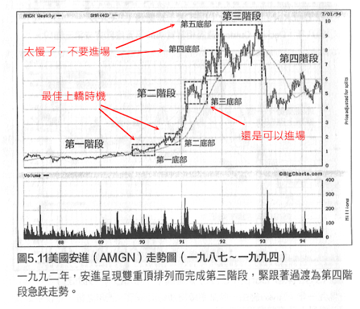
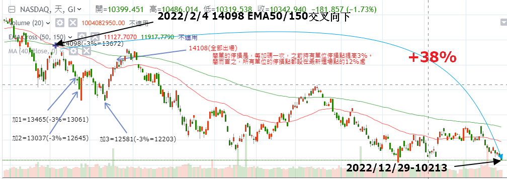
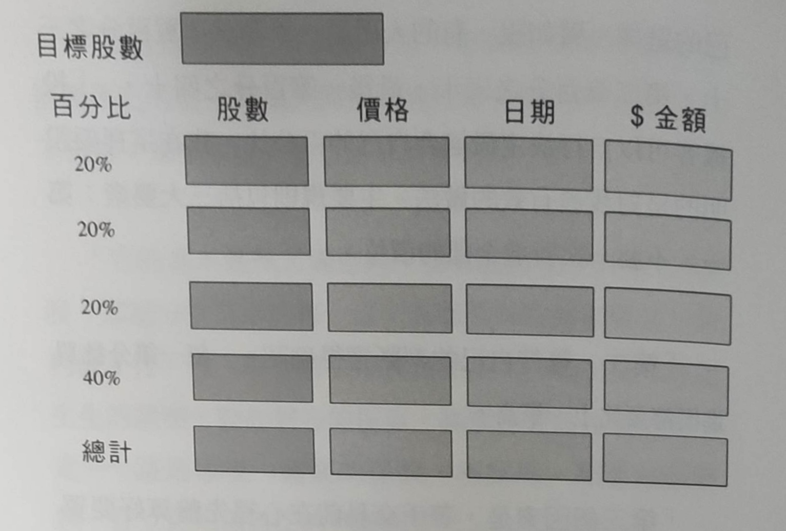

關鍵點操盤術
經過2022年股災(？總之跌得很重）的空方能量全面啟動後，使用傳說中的龜派氣功（海龜簡單停損法），歷經多次的死貓跳，在驚滔駭浪下頓悟：萬佛歸宗，原來祖師爺李佛摩的關鍵點操盤術乃天下至高武學。
臨界點
「炒股的智慧/陳江挺」認為：「買股票的技巧，全在怎樣找臨界點上。」其實他所說的「臨界點」就是李佛摩所說的「關鍵點」。
臨界點或關鍵點簡單的說只有三個意義：
(1)勝率最大時出手。但這個勝率大於51%就已經足夠，不需要百發百中。事實上也不可能有那種技術。
(2)虧損最小時停損。當然你可以把停損點設得很小，但這樣你的勝率就會急遽下降。
(3)獲利最大時出場。當有獲利時，要怎麼樣出場才不會「紙上富貴一場空」。
所有的功夫就只有這三個，何時出手？何時停損？何時獲利了結？
關鍵點操盤法
關鍵點可說是李佛摩最重要的一種操盤哲學。他說道：「早年我曾因在行情表現的錯誤時點上買進股票而破產，據此我發展出運用關鍵點的理論。當年的那些交易我『從來未曾賺到錢』。假如你在關鍵點成立之前就買進股票，你可能操之過急。這麼做是很危險的，因為股票可能沒有辦法形成適當的關鍵點並明確地走出它的方向。但是你必須很小心，假如你的買進價位比關鍵點高5%或10%，那麼你可能太遲了。你可能會因為走勢已經展開而喪失優勢。」
以上大致已經道盡了「關鍵點」的精髓。至於實際上如何實踐關鍵點的概念，我們也許不必拘泥於李佛摩所提出的方法，技術分析經過數百年的研究，也已經發展出許多模型，譬如：**頭肩底型態、杯柄型態、陰陽線反轉型態、123趨勢線反轉型態、箱型理論、VCP...**等等，這些都是李佛摩那個年代所沒有的，甚至某些交易系統結合各種指標與量價關係所發展出來的買賣點、加減碼與資金控管的整合應用，更是遠遠超過那個年代，不過基本的觀念仍是歷久不衰的。
以下附錄，整理收納一些李佛摩有關「關鍵點」的說法，包括：反轉關鍵點、行情持續關鍵點、金字塔加碼法、「關鍵點買進，一出手就要賺」、時間是交易構成要素。
MarkMinervini與李佛摩
MarkMinervini(以下簡稱Mark)是「超級績效－－金融怪傑交易之道」作者，操作的是「超級強勢股」，以他的觀點如何套用李佛摩的操作哲學？
Mark股價基本模型
Mark認為股票只能買在脫離第一階段打底區的第二階段。第二階段又分成幾個底部。
1.Mark的第二階段第一、第二底部突破可視為李佛摩的「反轉關鍵點」
2.Mark的第二階段第二或第三底部可視為李佛摩的「行情持續關鍵點」
3.Mark的第二階段第四底部以上以及第三、四階段都已經遠離關鍵點，不宜進場。
反轉關鍵點為什麼不是第一階段突破？
判斷第二階段的「趨勢樣板」有八個條件，其中一個條件是「兩百天移動平均至少有一個月的期間處於上升狀態(多數情況最好有四、五個月以上)」，另一個條件是「當時股價較五十二週低點至少高出30%(很多最佳候選股在突破橫向整理而展開大規模漲勢之前，股價已經較五十二週低點高出100%、300%或更多)」，所以，此時追高可能立刻會遭逢獲利了結的賣壓，亦即第二階段的第一底部，所以比較好的買點應該是等回檔修正後的重新再出發(第二階段的底部突破)。
[0007]

死貓與海龜
此次全球股災經過幾次的死貓跳，讓我對「海龜法」即連續性加碼法產生疑惑，因為你很可能在第5次加碼(如3%加碼一次)表示行情至少已走了15~20%之久，再加上你的出手應該是在有點趨勢的時候，放空時地５次加碼之時離高點已經至少超過了25%，這時如果來個死貓跳，你很可能就被洗出場了，結果你是在滿檔時碰上最有可能死貓跳被洗出的時機。
所以，我覺得還是不要加碼比較好。在關鍵點時ALL-IN，但加上試單策略，分成2批或3批進場，第一批買進若有賺且量價得宜，買進第二批，但此時因資金部位加大風險已大增，所以將風險停損點向上移或設成零虧損。此簡稱「二刀流買進法」
下圖是2022Fed升息大風暴美股大跌走勢，你在10/30週EMA交叉時(或50/150日)放空，原本至少可以穩賺38%，使用海龜加碼法，卻是以虧損收場。
不要使用海龜操盤術，或任何機械式加碼法包括胡立陽的農夫播種術。

加碼與試單的區別
斯斯有兩種，加碼說法有七、八種，諸如：胡立陽的「農夫播種術」，屬機械式加碼法；李佛摩的「行情持續關鍵點」、Stan的「交易員買點」、尼可拉斯的「箱形理論」都屬於我們熟知的加碼概念。但，書本上的李佛摩之「金字塔加碼法」其實就只是「行情持續關鍵點」的部位控制，與「試單進場法」是不同的，最好把這名詞取消。
一般說的「金字塔加碼」，其實也混淆不清，它是說「分批試單進場」，所以何不正名為「分批試單進場法」，它不是加碼。
最終結論，加碼法只有一種即「行情持續關鍵點加碼法」，進場法則是「分批試單進場法」，變形為二刀流或三刀流。至於「幽靈的禮物」其中所說的「規則二加碼」，應該屬於「分批試單進場法」，因為它是一個短線的波動，而不是經過整理後再突破的「行情持續」。(請參考附錄「李佛摩資金管理守則之一（試單）」
必也正名乎！名不正則言不順。
附錄
(以下摘自「傑西‧李佛摩的操盤術」)
李佛摩資金管理守則之一（試單）
「我稱它為我的偵測系統。不要賠錢——不要弄丟了你的本錢，不要賠光了你的存貨。沒有現金的投機客好比一個沒有存貨的商家。現金就是你的貨品、你的救生索、你最好的朋友。沒有了現金，你就出局了。千萬別他媽的弄丟了你的命！」
「把全部的部位都建立在單一價位上是錯誤而且危險的。最好是，先決定好你總共要交易多少股。譬如說，假如你最終的部位是要買進1.000股，那麼你得這樣做：先在關鍵點價位買進200股，假如股價往上走則再加碼200股，股價仍在關鍵點價位區間之內。假如它持續再往上走，再買200股。看看股票的反應，假如持續上升或整理了一下再度往上漲，你就可以放手買進最後那400股。」
「非常重要的一件事是，每一筆加碼買單的價格都得要比它的前一筆高。同樣的規則當然適用於放空，只不過每一筆空單成交價都得低於它的前一筆。」
「它的基本邏輯言簡意賅：假如總進貨部位是1,000股，那麼分批買進的每一筆交易都要為投機客帶來一份利潤才行。每一筆交易都賺錢是你基本判斷正確無誤活生生的證明，堅如磐石的保證。股票確實往正確的方向走——這是你惟一需要的保證。相反地，如果你在賠錢，你立刻知道自己的判斷錯了。」
「對沒有經驗的投機客而言，最困難的部份在於每一個部位的成交價在節節升高。為什麼呢？因為每個人都會貪小便宜。每一筆交易的成交價升高是違反人性的。人們總想要買在底部並且賣在頭部。心理再如何掙扎也敵不過事實，不要滿心期望，不要和行情報價爭辯，因為它永遠是對的。在投機的領域中，沒有希望、揣測、恐懼、貪婪、鬧情緒的空間。股價的表現就是事實，但人類的詮釋則常常隱藏著謊言。」
「最後，每個投機客對分批買進股票的百分比有自己的選擇。譬如說，有的人用第一筆測試單買百分之三十，第二筆百分之三十，最後一筆百分之四十。」「投機客可以自行決定最適合自己的百分比。我在這裡要說明的是對我最有效的做法。主要規則包括三大要素：第一、不要一次買進全部的價位。」「第二，等待自己的判斷獲得確認——每一筆分批買進價都要比上一筆高。」「第三個因素是，著手交易前在心裡先盤算好要買進的總股數或你要投入的總金額。」
資金管理偵測系統

$ 說明:
先確定自己所欲購入的總股數，也可以用金額來計算。接著按百分比來建立部位。李佛摩的百分比分配是20%-20%-20%-40%。你可以自己決定百分比的分配。
反轉關鍵點
「我一點都沒有誇大，當我對關鍵點有了這樣的認識後，它們就成為我交易的重要工具之一。在二Ｏ年代及三Ｏ年代初期，這個交易技巧在正規的股票投機領域中基本上是不為人知的。關鍵點是一種時機策略，我利用它來進出股市。」「再說一遍，要定義反轉關鍵點並不容易。我的看法是：它代表市場基本方向的轉變－－它是新走勢開始的完美心理時機，意味著基本趨勢的重大轉變。」
「反轉關鍵點的出現幾乎都會伴隨著成交量的大增，買進的人一窩蜂湧進與忙著要出場的陣陣賣壓短兵相接－－操作方向相反時亦然。成交量的增加是推斷關鍵點的重要因素－－成交量一定要出現，關鍵點才能獲得確認。這場買家與賣家的戰爭導致股票的方向反轉。這些重要的噴出量經常使當日成交量比日均量暴增50到500個百分點。」
「反轉關鍵點通常出現在朝一個方向走了一段長時間之後。這也是我認為必須要相當有耐心才能抓住大行情的原因之一。你需要有耐心才能找到真正的關鍵點。我有一套測試的辦法。」
「首先，我會送出「探測器」。我先買進一小部份，看看這第一筆交易是否正確。我用來確認反轉關鍵點的最後一道測試是檢視產業類股，至少檢視同一類股中的一檔股票，看看兩者的走勢型態是否相同。這是我檢視自己是否方向正確的最後一道必要確認程序。」
「正確掌握關鍵點讓我有機會在正確的時點成交第一筆交易。因此，在走勢起始之初，我便在正確的價位上有了一個介入點。這讓我立於不敗之地，我也才能夠熬得過正常的股價上下波動而不至於傷了自己的本錢。一旦股價脫離了關鍵點，可能受傷害的唯有我的紙上獲利，至於我寶貴的本錢則分毫無傷，因為我打一開始就處於獲利狀態。」
「早年我曾因在行情表現的錯誤時點上買進股票而破產，據此我發展出運用關鍵點的理論。當年的那些交易我「從來未曾賺到錢」。假如你在關鍵點成立之前就買進股票，你可能操之過急。這麼做是很危險的，因為股票可能沒有辦法形成適當的關鍵點並明確地走出它的方向。但是你必須很小心，假如你的買進價位比關鍵點高5%或10%，那麼你可能太遲了。你可能會因為走勢已經展開而喪失優勢。」
行情持續關鍵點
「反轉關鍵點」對推斷走勢方向的明確轉變至關緊要，而「行情持續關鍵點」則用來確認行進中的走勢是否朝正確的方向走。
「除了反轉關鍵點之外，另有一種我稱之為行情持續關鍵點的重要觀察指標。當走勢明確個股在行情持續期間發生自然回檔的時候，它經常會出現。只要該股可以自持續關鍵點脫困並且朝修正整理前的方向前進，它也可能是行情持續中的另一個介入點或是提高持股部位的好機會。好比將軍有時候也會下令暫停大舉進攻，好讓補給線可以跟上軍隊，並且讓他的士兵們有機會休息，我認為行情持續關鍵點就是股票在上升走勢中的暫時整理。它通常只是個自然回檔而已。但是，精明的投機客會仔細觀察該股結束整理後的走向，不要有預設立場。」
「對我個人而言，我從不曾因為股價太高就不買進，或因為股價太低就不放空。我等候持續關鍵點的信號出現，它給我建立新部位或繼續加碼(假如我已建立部位)的機會。不要苦苦追求已離你而去的股票，就隨它去吧。我情願等到股票重整旗鼓並形成新的行情持續關鍵點，就算付出比較多錢也無所謂。因為行情持續關鍵點提供了一份保證與確認，行情極有可能會持續走下去。它讓股票得到一個喘息和整理的機會，同時也藉此讓獲利率和業績能趕上股價表現。」行情持關鍵點可以是建立新部位或繼續加碼的機會。
金字塔加碼法
「我從市場上許多老手以及個人經驗中學會「千萬不要攤平損失」。也就是說，假如你買的股票價格下滑，你千萬就不可以再買了，不要試著將成本攤低，這種作法成功的機會很小。然而，「加碼往上買」卻時常奏效，也就是隨著價格往上是一路加碼。
只不過，我發現這麼做也是有風險的，所以我儘量在一開始就建立起主要部位，也就是在起始關鍵點處。然後，在股價來到我所謂的行情持續關鍵－－也就是股票有足夠的力量從整理走勢中脫穎而出時－－才加碼。我的意思是說，操盤手必須等待，直到股票證實自己要突破行情持續關鍵點往上漲。操盤手不可一心期待這個情形出現，因為直到股票自己表態前，過度期待是一種冒險。在這種緊要關頭，操作股票的人必須要像隻老鷹一樣的目光如炬、蓄勢待發，但就是不要受希望的影響而產生心態偏差。」
「操盤手最後一次的金字塔加碼機會是當股票帶大量突破新高之時，這是個非常好的現象，因為它非常有可能代表上面已經沒有任何套牢籌碼可以在短期內阻擋股票的漲勢。」
「金字塔操盤法是個險招，任何想要使用它的人都必須手腳靈敏且經驗豐富，因為股票漲越高或跌越深，情勢就會愈危急。我努力將所有大手筆的金字塔加碼手法限制在走勢起始之初。我發現當假設脫離底部一大段之後使用金字塔操盤法是不智的，最好是等待行情持續關鍵點出現股價突破新高之時才加碼。」
「永遠都要記住，股市裡沒有任何規則堪稱為鐵律。股市投機客的主要目標是試著讓儘可能多的因素都有利於自己。而且，就算做到這個地步，股市操盤手仍然時常會錯，他也必須用認賠出場來做回應。」
關鍵點買進，一出手就要賺
經驗已經向我證明，「買賣任何股票或商品要能真正賺到錢，必須打一開始進場就獲利才行」。由往後我所列舉的交易範例中，你會看到我選定在心理時刻做第一筆交易－－亦即在走勢力量強到能繼續往上衝時。它能有如此之強的走勢不是由於我對它的操作，原因在於它背後的那股力量實在太強大了。就是必須要往前衝而且也這麼做了。正如其它許多投機客一樣，我有許多次都無法耐心等到情況獲得確認。因為我想要無時無刻都能獲利。...
我再重述一遍，一段行情的真正發動無疑地要經過數度的點火。而我深信任何一位具投機客本能和耐心的人必能設計出一套足為指標的特定方法，讓自己能正確判定出手做第一筆交易的時機。成功的投機絕非僅憑臆測。從事投資或投機想要立於不敗之地，就必須要有指標來導引。我運用的這些指標也許對他人而言毫無價值。...
當一位投機客能確定某一檔股票的關鍵點，並且能判斷在那一點上應有的走勢時，他對這一檔股票的介入會從一開始就正確，這一點是對該次介入的正面確認。...
在這裡附帶一提，每一次只要我失去耐心，還末等到「關鍵點」出現就介入以求賺取暴利的結果幾乎都落得賠錢收場。...
使用關鍵點預測市場走勢時最須牢記的一點是：股票越過關鍵點之後若不能展現出其應有的表現，即應視之為必須要留意的危險信號。...
股價型態會提醒您，每一個重要走勢都不過是再次重覆以往類似的價格變動而已，只要能熟悉過去的走勢，就能預測未來、採取正確的行動並且自未來的走勢中獲取豐盛的報酬。
時間是交易構成要素
「在我後半段的交易史中，我決定不持有走勢方向不如我預期的股票。我會一直等到盤算中的完美時機出現時才買進股票。若我相信它應該在幾天內開始動，或者我認為它會在一段合理的時間(例如一、兩個禮拜)內往上走，而股票卻沒有這樣表現時，我就會賣出持股。我會等候數天、數週或數月，等到股票自己去站在我認為最適宜的點位上。換句話說，等待一個我能介入的完美時機，這時每個因素都對我有利。假如該股的表現不如我的預期，就算它沒有下跌，我也經常會出脫持股。」
「在股市進出多年讓我學會一件事，機會永遠都存在。現在拿著現金就預備位置意謂著你的資金或你的存貨閒置，但是假以時日當那個「特別的情況」出現時，它會創造出龐大的利潤。許多人不但總是賣出手中的好股票而且留著賠錢的股票，他們還會握著手上表現平淡、毫無作為和方向的股票。」
「請注意，我並不是說股票在上漲走勢中不會有正常的修正或正常的整理。我們現在談的是，你在操作中的股票顛簸不前、不上不下，看不出是在吃貨還是在倒貨。這種混沌情況出現時，出場有時比承擔倒貨風險好，以免股價最後往下走時，你得賠錢。雖然我們必須要給股票一點時間，讓它從這樣的情況中走出自已的方向，但它若猶豫不決，我們也絕不能手軟，第一時間就得出場。然後，繼續去尋找下一個交易標的。」
「有些股票在我手上儘管已經讓我賺了一、兩點，我還是會把它賣掉，只因為我不喜歡它那種衰弱或跛足式的走法。我不在乎自己打平、小賺或小賠，這檔股票的走法和我分析或相信要有的表現不符是不爭的事實。結論很簡單，我的判斷是錯的，所以我必須退出交易。我能確定的一件事是，過去找的判斷有錯的時候，未來也還會再錯。危險在於沒有認清自己的錯誤並出場。足智多謀永遠是對的，而驕傲卻只會讓你跌倒。」
「最糟的是那種我所謂「走勢飄忽」的股票，這些股票沒有按操盤手的期望走，讓他們手頭的資本被綁住在荒蕪之境像孤魂野鬼一樣。每當我必須將一切寄託在希望上時，我總會感到自己曝露在危險之中。而當我承擔損失時，我知道自己的處境，也知道該怎麼做才能扳回損失、重新獲利。假如我手上還有損失中的部位或走勢不明的部位，我往後的每一筆交易都會受到幹擾。我發現自己只能交易充滿活力的股票，領先群倫且天生有動能的股票。這樣的一股動能讓我左右逢源－－可上可下、可多可空。」
「我觀察到有許許多多的人買進股票後，把它們鎖在保險箱或金庫中，覺得自己的投資十分穩當。這絕對是大錯特錯，絕不可以認為股票可以買來存放到未來。成千上萬檔人們原先認為安全到像把錢「放在銀行裡」的好股票，舉凡鋼鐵、無線電、飛機、石油、鐵路等，都隨著歲月而走味變調。」
「我深信資金要保持流通。要記住，當一個商人有部份資金被「凍結」不能運轉時，他必須利用沒有被凍結的資金來創造所有的利潤，這會對他形成桎梏，因為「末凍結資金」必須付出雙倍的努力方能補足「死錢」的沒有生產力。」
「除了上述理由之外，還有我所謂的「喪失良機」。因為資金被凍結，這些操盤手喪失了許多操作勝出股票的黃金機會，這些股票本可以為他們帶來利潤和成功的，現在卻由於資金被套在沈悶、沒有利潤的困境中而沒有獲利的機會。」
「希望在股市裡扮演壞蛋的角色，隨著物換星移它毀掉無數位投機客。迅速承擔損失，不管你要不要賣掉股票，損失都其實存在。」
「換一個方式講，在我出手交易時，我設下兩個停損，一個是「價格上的停損」，另一個是「時問上的停損」。假如股票走勢與我相違，我不會留著部位讓它有超過數點以上的損失。而且，如果股票走勢在幾天之內都無法如我的預期，我也不會再握著那個部位。」
「這是我交易技巧中的精髓，這是我保持資金運轉的方法。乍聽之下或者今你感到矛盾，但實則不然。我常常抱著所有的操作資金遠遠地坐在市場外邊，我一直等待，等著市場選擇自己要走的方向，等著完美交易情境的到來，等著它自己走到我面前。操作市場的關鍵在於手邊永遠要有現金可以付諸行動，就像將軍保留最後一支軍隊，以便在完美時刻投入戰場以確保勝利。」